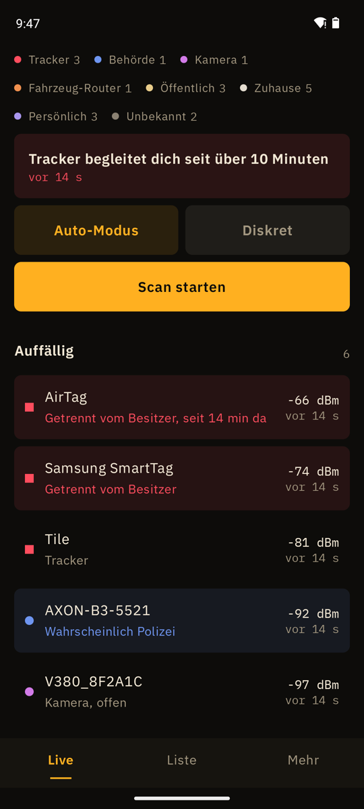

AirTag mit Android finden
Warnt, wenn ein fremder Tracker über zehn Minuten bei dir bleibt.
APK herunterladenQuellcode auf GitHub
Kostenlos, Android 8.0 oder neuer, läuft auf GrapheneOS ohne Google-Dienste. Kein Konto.

Wer nach „AirTag Android“ oder „Tracker App Android“ sucht, landet meist bei Apples Tracker Detect, die nur sucht, wenn man sie antippt. Funkblick läuft im Hintergrund weiter und erkennt AirTags und andere Find-My-Tracker, Samsung SmartTags, Tile, Chipolo, Pebblebee und Tracker im Google-Netz „Mein Gerät finden“. Es unterscheidet einen Tracker neben seinem Besitzer von einem, der allein unterwegs ist, und warnt, sobald so einer zehn Minuten bei dir ist.
AirTag finden: Android statt iPhone
- Funkblick öffnen und Scan starten. Tracker-Schutz ist von Anfang an an.
- In der Liste den Filter Tracker wählen. Ein roter Hinweis getrennt heißt: der Tracker ist nicht bei seinem Besitzer.
- Den Tracker antippen, dann Peilen. Langsam Taschen, Jacke, Rucksack oder Auto absuchen: die Zahl steigt und es piept schneller, je näher du kommst.
- Gefunden? Behalten, nicht wegwerfen: es ist ein Beweismittel. Bei Bedrohung die Polizei rufen (110).
Was Funkblick nicht kann
- Keine Richtung. Ein Handy misst nur, wie stark ein Signal ist. Der Winkel im Radar ist ein fester Platz pro Gerät, kein Kompass.
- Nur Zugangspunkte. Android zeigt WLAN-Router und Hotspots, keine Geräte, die nur verbunden sind. Eine Kamera im fremden Heimnetz sieht Funkblick nicht.
- Kein Behördenfunk. Polizei und Rettungsdienst funken per TETRA um 400 MHz. Das empfängt kein Handy. Funkblick sieht nur WLAN und Bluetooth ihrer Geräte, wenn sie welche haben.
- Zufallsadressen. Handys und Tracker wechseln ihre Bluetooth-Adresse. Funkblick liest dann, was das Gerät sendet, statt den Hersteller zu raten.
Häufige Fragen
AirTag erkennen, Android statt iPhone: geht das?
Ja. Funkblick ist ein AirTag-Scanner (Android 8 und neuer) und braucht weder iPhone noch Apple-Konto.
Tracker erkennen: App oder Android-Einstellung?
Android meldet unbekannte Tracker selbst, aber nur mit Google-Play-Diensten. Auf GrapheneOS ohne Play-Dienste fehlt das, dort braucht es eine App wie Funkblick oder AirGuard.
Kann man einen AirTag mit Android finden?
Ja. Ein AirTag ohne seinen Besitzer sendet alle zwei Sekunden ein Find-My-Signal. Funkblick liest es mit dem normalen Bluetooth-Scan des Handys, ohne Apple-Gerät.
Wann warnt Funkblick?
Wenn ein vom Besitzer getrennter Tracker über zehn Minuten in deiner Nähe ist, ohne Pause von fünf Minuten, und mit GPS an drei Orten, die mindestens 300 m auseinanderliegen. Früher, wenn derselbe Tracker schon bei einer früheren Fahrt am selben Tag mitgefahren ist (ein Tracker behält seine Adresse bis zu einen Tag): dann reicht ein zweiter Ort. Tracker neben ihrem Besitzer (die Schlüssel einer Freundin) lösen nie aus.
Kann Funkblick den Tracker piepen lassen?
Nein, dafür braucht es eine Bluetooth-Verbindung, und Funkblick verbindet sich nie. Das kann AirGuard von der TU Darmstadt. Die Signalbalken reichen meist, um ihn zu finden.
Wo bekomme ich Hilfe?
Polizei 110. Hilfetelefon Gewalt gegen Frauen 116 016, rund um die Uhr, kostenlos, anonym. Weisser Ring (Opferhilfe) 116 006.